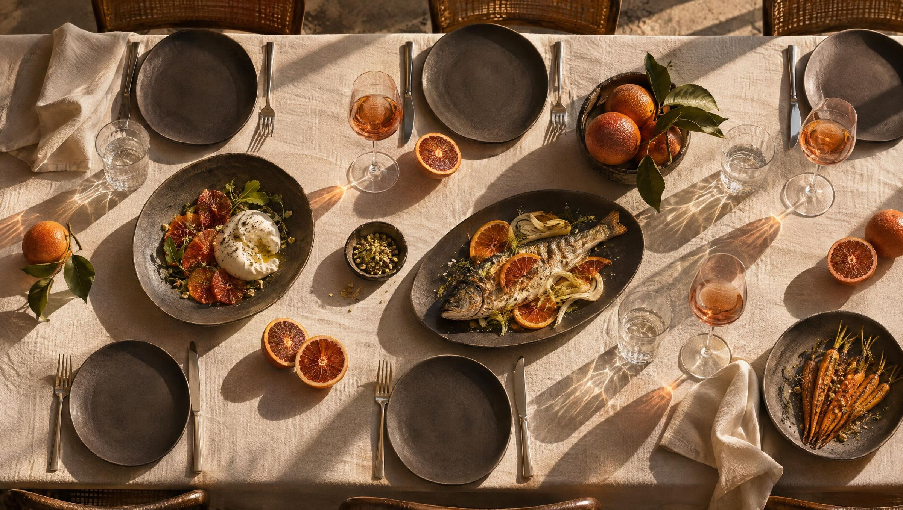
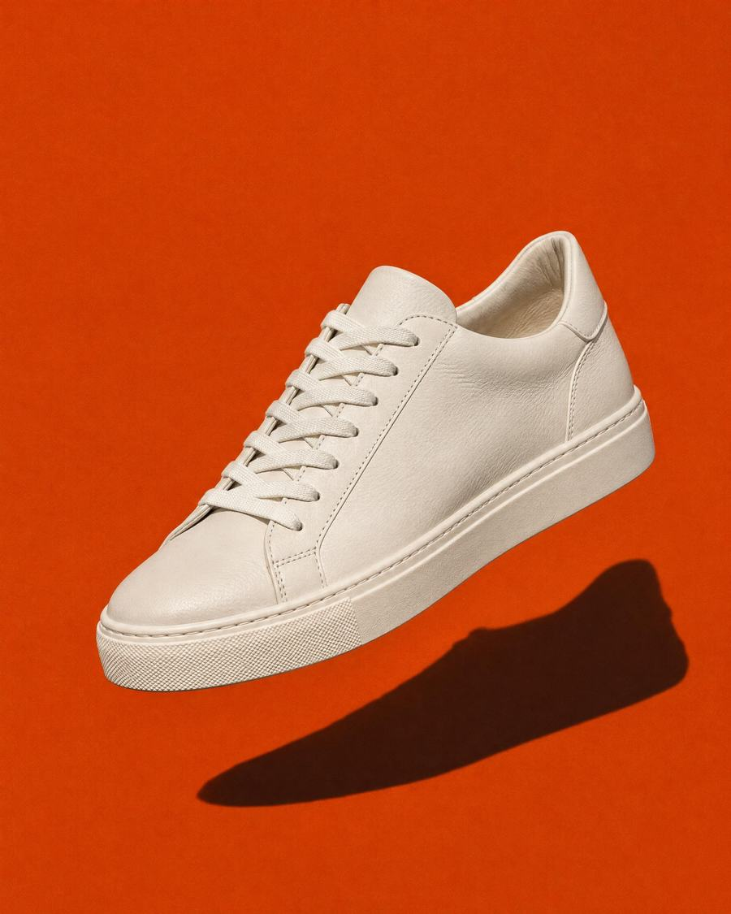
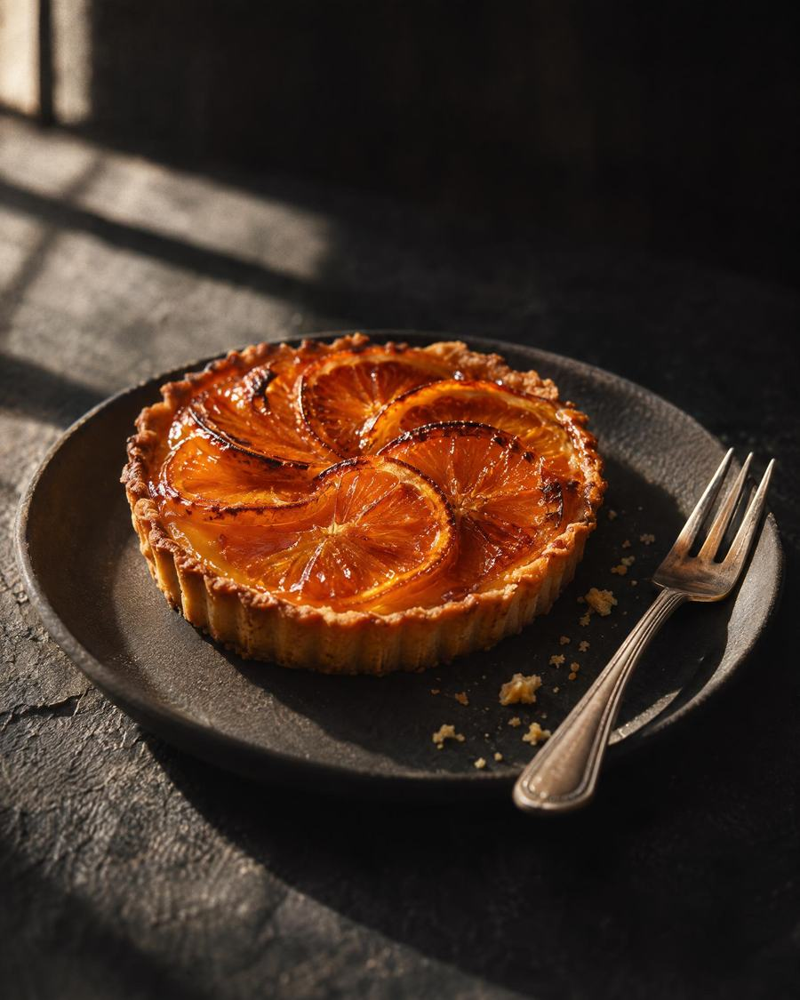
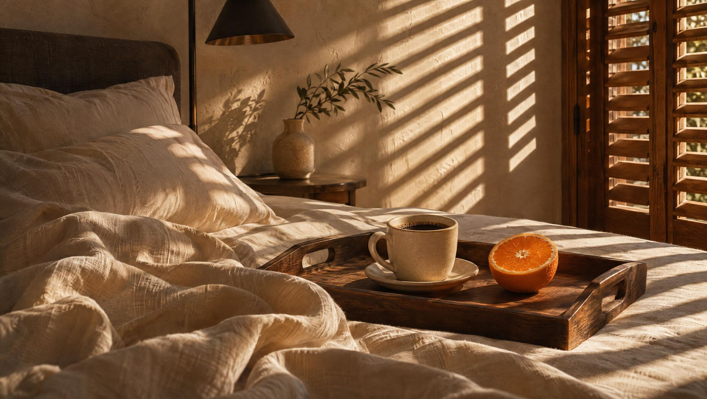
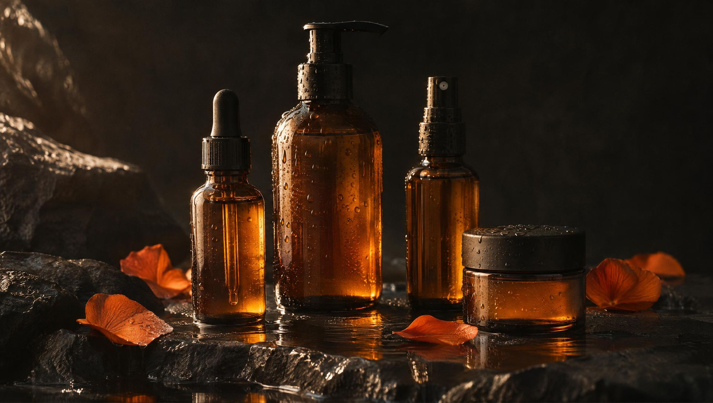
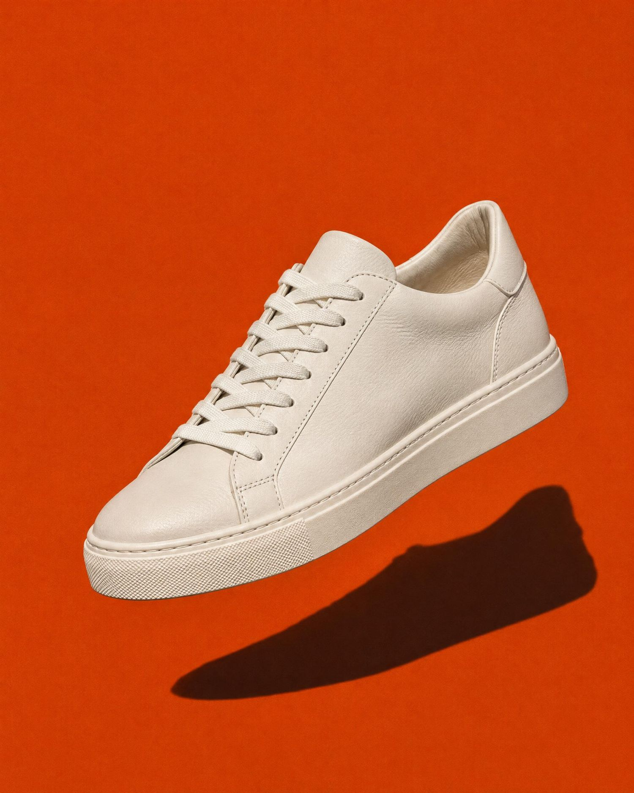
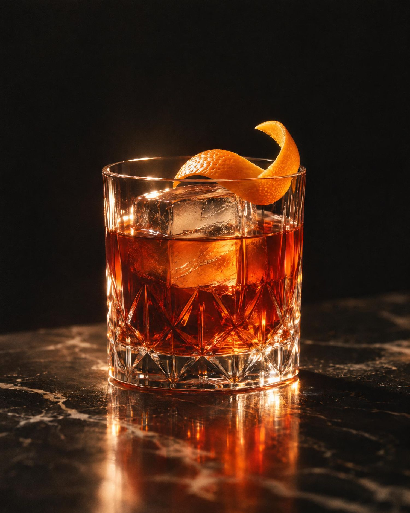
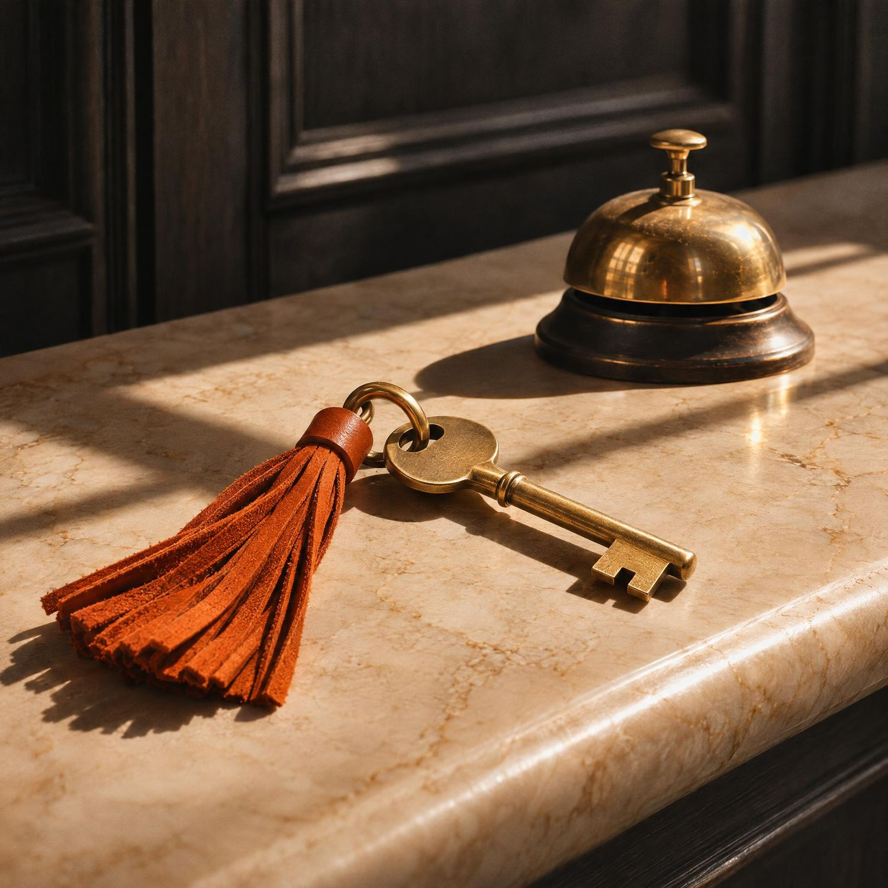
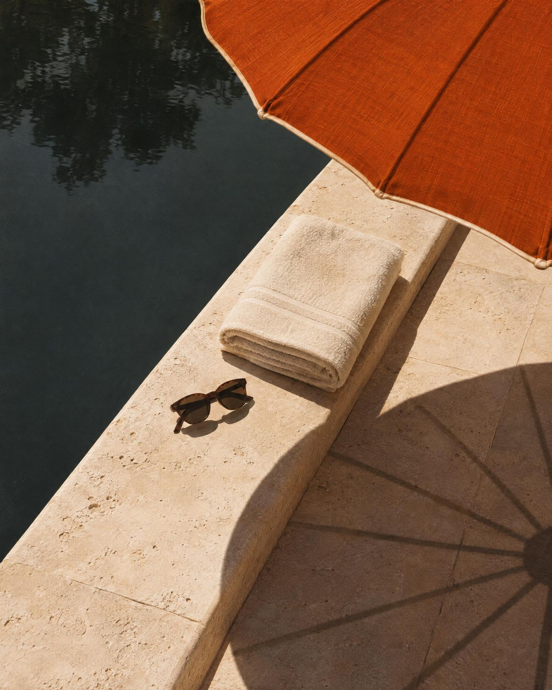

Good ideas deserve a bigger frame
Spare Frame Studios makes campaigns, imagery, and short films for restaurants, retailers, and hospitality brands. We start from real photographs and use generative AI to take them further.


One idea. Three sizes of frame
Start with a single image or go all the way to a film. The idea stays the same. The frame gets bigger.
-

Imagery
The single frame
Products, plates, and places, made as a matching set for your menu, your site, and your feed.
-
Campaigns
The wider frame
One idea carried through every channel: the lead visual, the launch, the ads, the email, the shop floor.
-

Short films
The moving frame
Fifteen to sixty seconds for a launch, an ad, or the screens in your own space.

Real products. Real places. Generated campaigns
We use generative AI the way other studios use a location and a crew. You send photographs of the real thing. We direct, generate, and finish the work, and we always tell you how each piece was made.
Work that earns a second look
We’re a new studio, so these are our own concepts rather than client work. Each is a brief we set ourselves and made with generative AI.




From your photos to a finished campaign
You send the real thing
Photos of the product, the plate, or the room, even from a phone. Then we talk through what you’re trying to accomplish.
We direct and generate
We set the idea and the look, then build the imagery and film with generative AI, grounded in what you sent.
You get the full set
Finished files ready to post, print, or play, sized for every place they’ll run.
Have a project in mind?
Tell us what you’re working on. We’ll reply with a few questions and an idea of what we’d make.